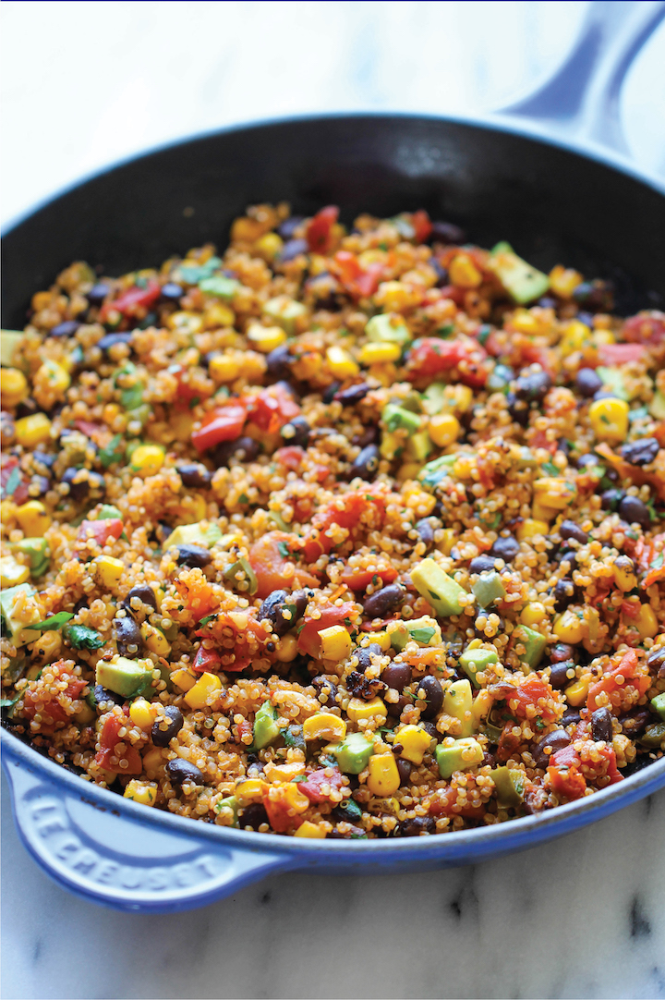

One Pan Mexican Quinoa

Description
Wonderfully light, healthy and nutritious. And it’s so easy to make – even
the quinoa is cooked right in the pan!
Recipe source
Damn Delicious
Ingredients
- 1 tablespoon olive oil
- 2 cloves garlic, minced
- 1 jalapeno, minced
- 1 cup quinoa
- 1 cup vegetable broth
- 1 15-ounce can black beans, drained and rinsed
- 1 14.5 oz can fire-roasted diced tomatoes
- 1 cup corn kernels, frozen, canned or roasted
- 1 cup corn kernels, frozen, canned or roasted
- 1 teaspoon chili powder
- ½ teaspoon cumin
- Kosher salt and freshly ground black pepper, to taste
- 1 avocado, halved, seeded, peeled and diced
- Juice of 1 lime
- 2 tablespoons chopped fresh cilantro leaves
Instructions
-
Heat olive oil in a large skillet over medium high heat. Add garlic and
jalapeno, and cook, stirring frequently, until fragrant, about 1 minute.
-
Stir in quinoa, vegetable broth, beans, tomatoes, corn, chili powder and
cumin; season with salt and pepper, to taste. Bring to a boil; cover,
reduce heat and simmer until quinoa is cooked through, about 20 minutes.
Stir in avocado, lime juice and cilantro.
- Serve immediately.
Cwic-beam's go-to recipes